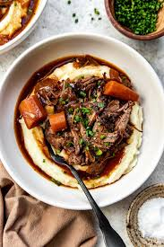

home
Braised beef

description
An elevated version of homestyle pot roast, this braised beef is hearty and full of earthy richness. It would
pair well with mashed potatoes, buttery noodles, or crusty bread.
Ingredients
- 3 ½ pounds boneless beef chuck roast
- 4 teaspoons olive oil
- 1 medium onion, chopped
steps
- Gather all ingredients and preheat the oven to 350 degrees F (175 degrees C).
- Season beef pieces evenly on all sides with 3 1/2 teaspoons salt, 2 teaspoons pepper, and garlic powder.